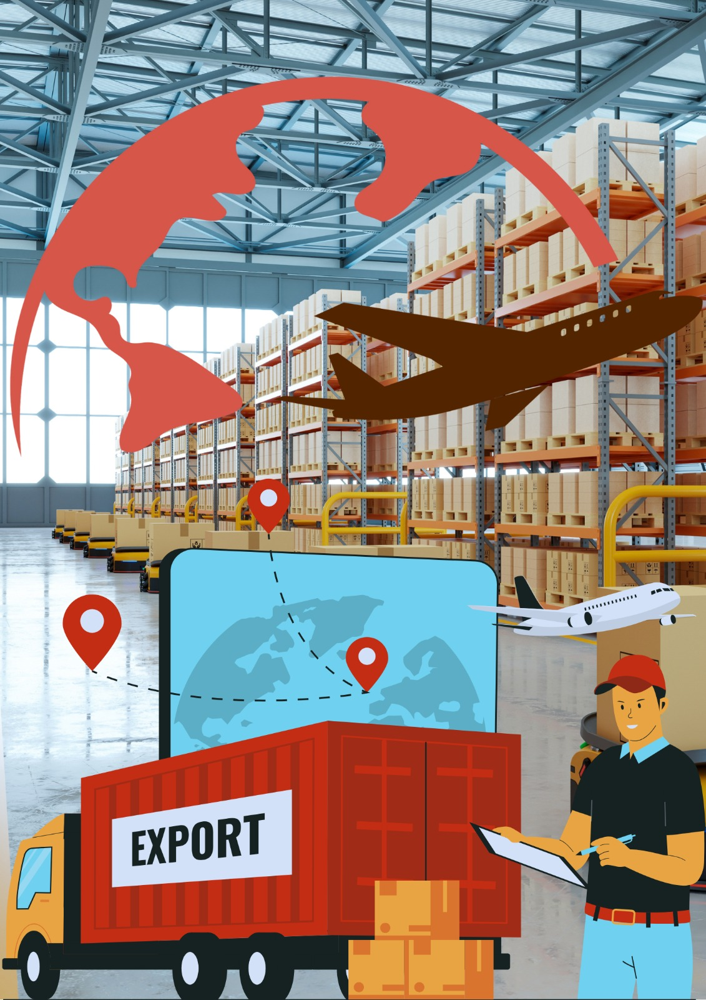

O que é Logística?
A logística é uma área fundamental para o funcionamento das empresas e da sociedade como um todo. Ela pode ser definida como o processo de planejar, implementar e controlar, de forma eficiente, o fluxo e a armazenagem de produtos, serviços e informações, desde o ponto de origem até o consumidor final. Esse conjunto de atividades busca garantir que os bens cheguem ao destino certo, no prazo adequado, em perfeitas condições e com o menor custo possível. Dentro da logística estão incluídas várias etapas importantes, como o transporte, a armazenagem, a gestão de estoques, a distribuição, o controle de suprimentos, o processamento de pedidos e até mesmo a logística reversa, que cuida do retorno de produtos para troca, devolução ou reciclagem. Todas essas etapas precisam estar integradas para que a empresa consiga operar de forma competitiva e eficiente. A importância da logística vai além da entrega de mercadorias. Ela é responsável por otimizar recursos, reduzir desperdícios, melhorar os processos internos e aumentar a satisfação do cliente. Quando bem aplicada, contribui para a sustentabilidade, pois reduz o impacto ambiental com rotas mais inteligentes, melhor aproveitamento de cargas e menor consumo de combustível. No mercado atual, em que os consumidores buscam rapidez e qualidade no atendimento, a logística se tornou um diferencial estratégico. Empresas que conseguem entregar mais rápido, com custos menores e mantendo a qualidade, saem na frente da concorrência. Por isso, a logística não é apenas um setor de apoio, mas sim uma área estratégica que conecta fornecedores, empresas e clientes em uma grande rede de valor.
